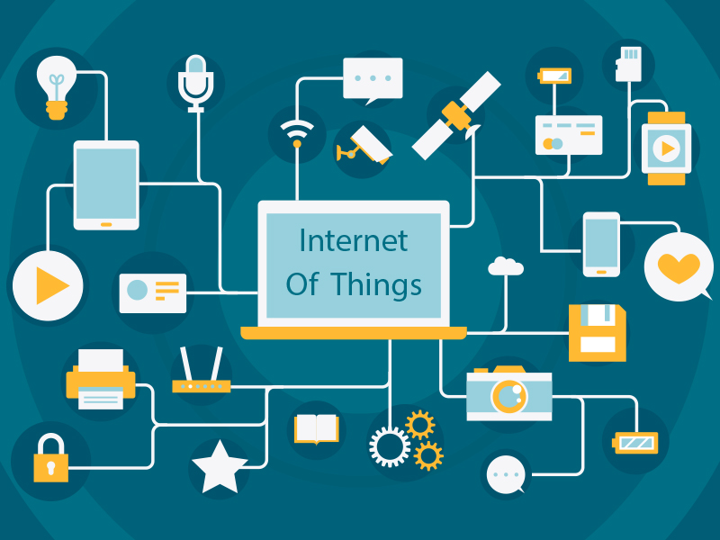

In a nutshell, the Internet of Things is the concept of connecting any device (so long as it has an on/off switch) to the Internet and to other connected devices. The IoT is a giant network of connected things and people – all of which collect and share data about the way they are used and about the environment around them. That includes an extraordinary number of objects of all shapes and sizes – from smart microwaves, which automatically cook your food for the right length of time, to self-driving cars, whose complex sensors detect objects in their path, to wearable fitness devices that measure your heart rate and the number of steps you’ve taken that day, then use that information to suggest exercise plans tailored to you. There are even connected footballs that can track how far and fast they are thrown and record those statistics via an app for future training purposes.
